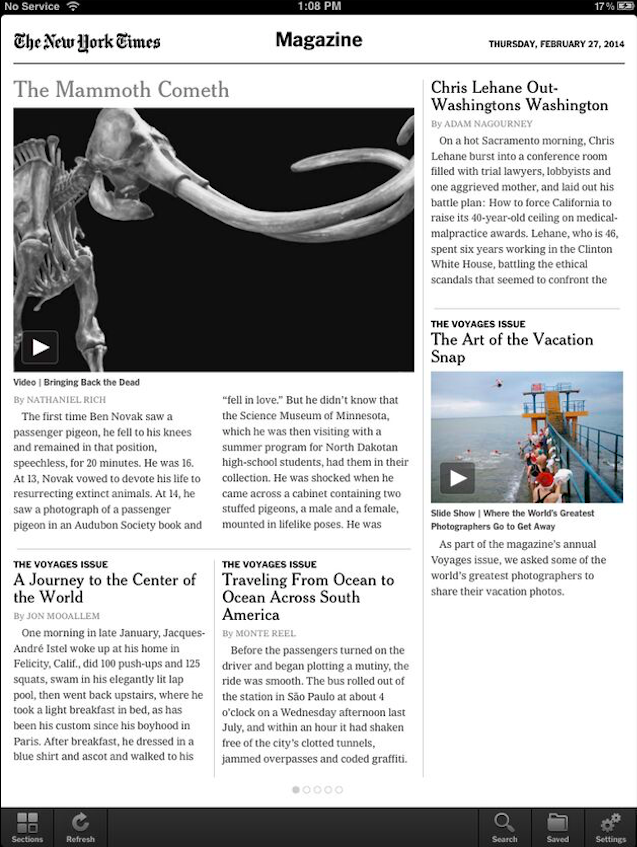
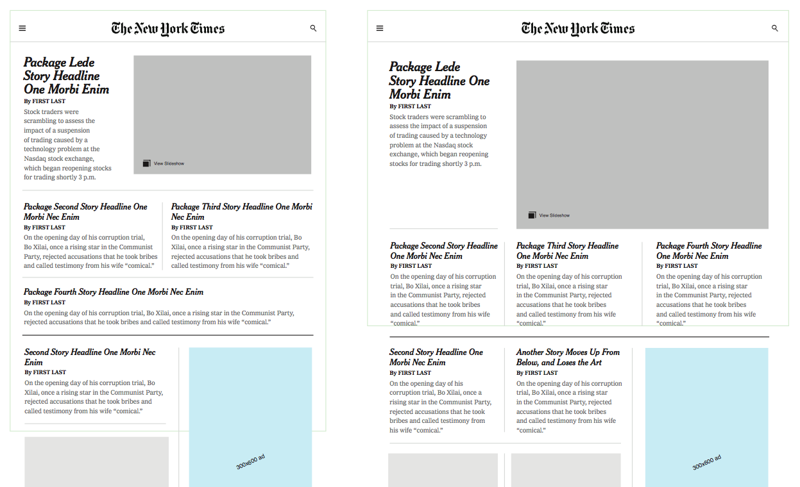

Elliott Malkin
Seasoned product designer and digital strategist who led mobile app design at The New York Times. Prides himself on being a crisp communicator with laser sharp focus and analysis, helping teams innovate through experimentation and play. Works in Sketch and Framer.js.
NYTimes Core Android App
As Product Design Director at The New York Times, I was creative lead of an interdisciplinary team of 25+ building news apps for Android, iOS, and mobile web. When I took the role in 2011, the apps were essentially static feed readers. By 2015 we had a set of fully editable products with a range of presentation styles and a vastly improved UX.
2011

2015
NYTimes Core iPhone App
2011
2015
NYTimes iPad App
When we embarked on an iPad app redesign, we turned another feed reader with few visual templates into a textured, stylized experience that harnessed the voice and art direction of every section.
2013 Magazine Front
2014 Magazine Front
2014 iPad App Redesign
Top News Variations
When we embarked on an iPad app redesign, we turned another feed reader with few visual templates into a textured, stylized experience that harnessed the voice and art direction of every section.

NYTNow Original Concept
Lead creative and product strategy for what became NYTNow, a lower-priced lightweight subscription app targeting a younger readership.
FramerJS Prototyping
I prototype interaction design concepts as early as possible in many different forms. The example below is a fully-responsive photo slider coded with Coffeescript.